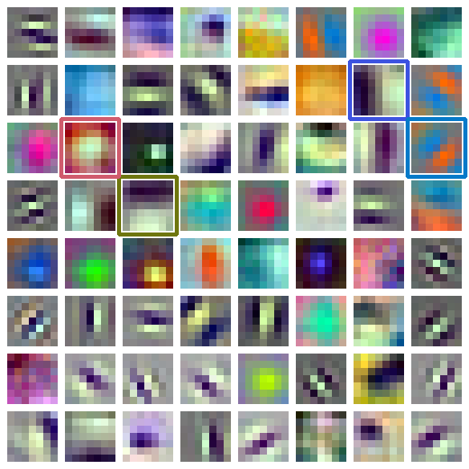
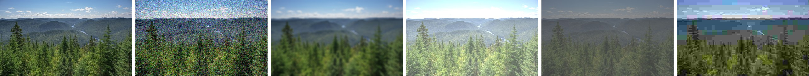

Today
One question, four parts
Each part ends in the same notebook — lab.ipynb, one section per part.
A
Neurons
Can a weighted sum of pixels make a decision?
By the end of this partCompute a neuron's output, and explain why layers need a non-linearity.
A · Neurons
A neuron is the weighted sum you already know — plus a decision
inputs x (a 3 × 3 patch)
weights w
Σ wᵢxᵢ = 24
+ b (−10) = 14
ReLU → 14
patch values shown ×8 as grey; the numbers are 10 13 16 / 14 17 20 / 18 21 24
A neuron does the same sum, adds a bias b, then an activation decides how much passes:
One difference: a kernel's weights were designed. A neuron's weights are learned — part B.
A · Neurons
Two weights and a bias draw a line
Each dot is a 24 × 24 patch of the landscape photo (session 2): how bright (across) and how many edges (up).
The neuron says sky where z = w₁·bright + w₂·edges + b > 0. The line is where z = 0.
w₁ and w₂ turn the line; b moves it. Try to get all 60 right — then part B finds them without you.
A · Neurons
Without a bend, ten layers are one layer
activations: the bend between layers
Two layers with no activation: W₂(W₁x) = (W₂W₁)x — still one layer.
W₁ = [1 2 / 0 1] · W₂ = [1 0 / −1 1]
W₂W₁ = [1 2 / −1 −1]
Put ReLU between them. For x = (1, −1): W₁x = (−1, −1) → ReLU → (0, 0) → output (0, 0) — but W₂W₁x = (−1, 0). The bend changes the answer, so the second layer adds something new.
A · Neurons
Layers build features from features
Gold dots inside, teal dots on a ring around them.
One neuron draws one straight line: it cannot wrap around the middle — 62% right at best.
Four hidden neurons each draw a line (dashed); the next neuron combines them into a closed region — 100%.
In images, layer after layer builds the same way: edges → textures → parts → objects (part C).
A · Neurons
A photo into a fully connected layer: 150 million weights
one row of the landscape photo, and the same row after the scene moves 1 pixel left
red outline: an input that changed — 12 of 12
Every neuron gets its own weight for every pixel.
Move the object one pixel and almost every input changes: the layer must learn each position separately. Part C fixes both by sharing one small kernel across the image.
A · Neurons
Try it: one neuron
- Compute z and the ReLU output.
- The bias becomes 5. Now?
Answer
1. z = 0.5·2 + 2·(−1) + (−1)·3 + 1 = 1 − 2 − 3 + 1 = −3 → ReLU 0 (the neuron stays silent) · 2. z = 1 − 2 − 3 + 5 = 1 → ReLU 1.z = Σ wᵢxᵢ + b, then a = max(0, z).
The bias decides how easily the neuron fires.
A · Neurons
A neuron: weigh, add, bend
Open lab in Colab · part Aa neuron by hand vs PyTorch, one neuron's line, two layers without ReLU
More practice · Session 4 A — practice bank with worked solutions →
Next · B: the weights you just turned by hand — found by the data itself.
B
Learning
How does a network find good weights by itself?
By the end of this partTake one gradient-descent step by hand, and tell overfitting from a training curve.
B · Learning
Learning = making one number smaller: the loss
| first guess w = (1, 1), b = −1 | better w = (4, −4), b = −1 | ||||
|---|---|---|---|---|---|
| patch | label y | p | (p − y)² | p | (p − y)² |
![]() | sky (1) | 0.51 | 0.24 | 0.85 | 0.02 |
![]() | sky (1) | 0.45 | 0.30 | 0.82 | 0.03 |
![]() | trees (0) | 0.52 | 0.27 | 0.08 | 0.01 |
![]() | trees (0) | 0.54 | 0.29 | 0.06 | 0.00 |
| all 60 patches | loss 0.265 27 / 60 right | loss 0.020 60 / 60 right | |||
four of the 60 landscape patches from slide 5 · p = sigmoid(z): near 1 = sky, near 0 = trees
A program needs one number that says how wrong it is: the loss.
0 = perfect. Learning = change w and b so that L goes down.
B · Learning
One line of Taylor: step against the slope and the loss drops
L(w) = (w − 3)² at w = −1 (slope −8), one step with η = 0.1
Close to w, a smooth loss is almost its tangent line:
Choose the step Δ = −η·L′(w):
A square is never negative, so a small step always goes down. Too large a step leaves the tangent's neighbourhood — the overshoot of the next slide.
B · Learning
Go downhill: gradient descent
The gradient is the slope of the loss: here dL/dw = 2(w − 3). It points uphill.
η (the learning rate) too small: many tiny steps. η = 1: bounces between −1 and 7 for ever. η > 1: every step overshoots further — the loss explodes.
slope 2(−1 − 3) = −8 → w = −1 − 0.1·(−8) = −0.2 · L: 16 → 10.24
Smarter steps (momentum, Adam): T4-4.
B · Learning
Backpropagation passes the blame backwards
Forward: compute the value at each box, left to right, up to the loss.
Backward: each box knows only its own slope. Multiply the slopes from the loss back to w — the chain rule.
Here dL/dw = 8, so with η = 0.1, w goes from 1.5 to 0.7.
One forward pass + one backward pass gives the gradient of every weight, even millions. Step by step: T4-1.
B · Learning
Watch the data choose a kernel
the photo through the current kernel
target: the photo through Sobel
Now give only the photo and the answer picture. Start from random numbers:
η 1.5: within 0.05 of Sobel after 67 steps. η 1.9: explodes — above 1.81 every step overshoots, as on slide 14.
B · Learning
Mini-batches: a cheap, noisy step
| batch size B | noise in the gradient | |
|---|---|---|
| 16 | 0.237 | |
| 64 | 0.119 | |
| 256 | 0.060 | |
| 1,024 | 0.030 | |
| all 17,854 | 0 |
slide 16's problem at the start kernel · noise = rms distance from the full gradient, 2,000 random batches each
A step on all 17,854 patches uses every one. A mini-batch uses a random B of them: same direction on average, plus noise.
The batch gradient is an average of B per-example gradients, so its noise is σ/√B: 4 × the batch → half the noise, at 4 × the work. One pass over all the data is an epoch.
B 16 → 64: 4 × the batch, √4 = 2 → 0.237 ÷ 2 ≈ 0.118 · measured 0.119
B · Learning
Fits the training set, fails on new data
10 training points (filled) and 40 new ones held back (rings). A degree-d curve has d + 1 weights.
Training error only falls. Error on the new points is lowest at degree 3, then climbs: the curve memorises the noise — overfitting. Ways to fight it: T4-3.
B · Learning
Three sets: train, validate, test
a network (64 → 128 → 10) learning handwritten digits from 100 images, 30 of them with a wrong label · loss on those 100 and on 500 validation images
Train: the weights learn from these. Validation: pick the settings — degree, η, when to stop. Test: touched once, at the end.
By epoch 600 it gets all 100 training labels “right” — the 30 wrong ones too — and validation falls from 72% to 60%. Stop at epoch 29: the 1,197 test images give 74%. Why models generalise: T4-7.
Used again: session 8 measures detectors on held-out images · project Demo, criterion 1: every solution on the same data.
B · Learning
Try it: one step downhill
- With η = 0.25: the gradient, w₁, and the loss before and after.
- With η = 1 instead: w₁ and its loss?
Answer
1. dL/dw = 2(1 − 3) = −4 · w₁ = 1 − 0.25·(−4) = 2 · loss 4 → 1 · 2. w₁ = 1 − 1·(−4) = 5 · loss (5 − 3)² = 4: no better — it jumped over the bottom (slide 14).dL/dw = 2(w − 3), then w ← w − η·dL/dw.
Negative slope → step right.
B · Learning
Learning: follow the gradient of the loss, check on unseen data
Open lab in Colab · part Bgradient descent on (w − 3)², a kernel learned back to Sobel, an MLP on digits with train/val curves
More practice · Session 4 B — practice bank with worked solutions →
Later: session 5 C trains CLIP with another loss. Next · C: the slide-16 kernel, slid over the whole image — a CNN.
C
Convolutional networks
Why slide one small kernel over the whole image?
By the end of this partCompute a conv layer's output shape, parameter count and receptive field.
C · Convolutional networks
Local and shared: a convolution layer
Local: each output looks only at its neighbours. Shared: every position uses the same weights.
The photo from slide 8: 150,528,000 weights fully connected. 64 kernels of 3 × 3 × 3: 1,792.
C · Convolutional networks
Shift the input, the feature map shifts too
input, shifted
feature map: |Sobel x|
Move the scene; the same kernel finds the same edge, just as far over. The red cross follows the strongest edge in the middle of the photo.
Shift in → same shift out: the layer is equivariant to shifts. One kernel learns “vertical edge” once and finds it anywhere — the fully connected layer of slide 8 had to learn every position again.
C · Convolutional networks
Many kernels make many channels
A kernel spans all input channels: k × k × Cin weights + 1 bias → one output map. Cout kernels → Cout channels.
RGB → 16 maps: (9·3 + 1)·16 = 448. Next layer, 16 → 32: (9·16 + 1)·32 = 4,640. The size of the photo does not appear.
C · Convolutional networks
Output size: the session-3 formula, unchanged
| n | k | p | s | out | use |
|---|---|---|---|---|---|
| 32 | 3 | 1 | 1 | 32 | keep the size (“same”) |
| 32 | 3 | 1 | 2 | 16 | halve it |
| 224 | 7 | 3 | 2 | 112 | ResNet's first layer |
Padding p = (k − 1)/2 keeps the size; stride 2 halves it.
The channel count does not change the height and width — only Cout sets the depth.
C · Convolutional networks
Pooling keeps the strongest response
4 × 4 of a real feature map (|Sobel x|, slide 24)
Each 2 × 2 block → one number: half the width, half the height, no weights to learn.
Max keeps “was the edge here?”, not exactly where — small shifts matter less.
C · Convolutional networks
Each layer sees further: the receptive field
One output pixel after a stack of 3 × 3 layers: which input pixels can reach it?
Each layer adds (k − 1) × the product of the strides before it. Stride 1: 3 → 5 → 7 → 9. A stride of 2 early doubles every later step: 3 → 7 → 11 → 15.
two 5 × 5 layers: 1 + 4 + 4 = 9 · a 3 × 3, then a 5 × 5: 1 + 2 + 4 = 7
ResNet-18's last layer: 435 × 435 pixels — the whole 224 photo, built up step by step. Session 5: attention lets every pixel see every other in one layer.
C · Convolutional networks
What the first layer learns

Nobody designed these. Training found:
vertical edge — like Sobel x (match 0.87)
horizontal edge — like Sobel y (match 0.87)
blob — like a Gaussian (match 0.88)
colour: orange against blue
Session 3's last slide promised it: the first layer ends up looking a lot like our edge filters. Deeper layers combine them (slide 7).
C · Convolutional networks
Count the cells the stamps cover
1-D: n = 3 input pixels, kernel k = 3, stride s = 2, no padding
Input pixel i stamps the kernel starting at cell i·s. The first starts at 0, the last at (n − 1)s.
The last stamp is k cells wide, so the output ends at (n − 1)s + k.
Padding p in a transposed convolution trims p cells from each end:
C · Convolutional networks
Going back up: transposed convolution
input 2 × 2
output 5 × 5 · kernel 3 × 3 of ones · stride 2
Each input pixel stamps a weighted copy of the kernel, s pixels apart. Where stamps overlap, they add.
(2 − 1)·2 − 0 + 3 = 5. Session 8: segmentation grows small feature maps back to a full-size mask this way.
n 16, k 2, s 2, p 0 → 15·2 + 2 = 32 · n 5, k 3, s 2, p 1 → 4·2 − 2 + 3 = 9
C · Convolutional networks
A whole CNN, layer by layer
| layer | output | parameters |
|---|---|---|
| input | 32 × 32 × 3 | — |
| conv 3 × 3, 16, p 1 | 32 × 32 × 16 | 448 |
| max pool 2 × 2 | 16 × 16 × 16 | — |
| conv 3 × 3, 32, p 1 | 16 × 16 × 32 | 4,640 |
| max pool 2 × 2 | 8 × 8 × 32 | — |
| fully connected → 10 | 10 | 20,490 |
| total | 25,578 |
Conv layers keep the picture shape and add channels; pooling halves it; one fully connected layer reads the result.
Most weights sit in that last layer: 20,490 of 25,578.
Compare: one fully connected layer from the same 32 × 32 × 3 input to just 16 units already has 49,168 — more than the whole CNN.
C · Convolutional networks
Try it: shape, weights, view
- Input 64 × 64 × 3, 32 kernels of 5 × 5, padding 2, stride 2. Output shape? Parameters?
- Three 3 × 3 layers, the first with stride 2. Receptive field?
- Transposed convolution: n = 8, k = 4, s = 2, p = 1. Output size?
Answer
1. ⌊(64 + 4 − 5)/2⌋ + 1 = 32 → 32 × 32 × 32 · (25·3 + 1)·32 = 2,432 · 2. 3 → 3 + 2·2 = 7 → 7 + 2·2 = 11 · 3. (8 − 1)·2 − 2 + 4 = 16.out = ⌊(n + 2p − k)/s⌋ + 1 · params = (k²Cin + 1)Cout
Receptive field: each layer adds (k − 1) × the stride so far.
Transposed: (n − 1)s − 2p + k
C · Convolutional networks
CNNs: local, shared, stacked
Open lab in Colab · part Cnn.Conv2d shapes and counts, CNN vs MLP on digits, pooling, receptive field, ResNet-18's first layer
More practice · Session 4 C — practice bank with worked solutions →
Later: session 5 A–B (attention sees everything at once) · session 6 (CNN features vs hand-made corners) · session 8 (transposed conv → masks). Next · D: stack many more layers.
D
Deeper & reused
How do we train very deep networks — and reuse one trained on millions of photos?
By the end of this partExplain skip connections, and plan transfer learning for a small dataset.
D · Deeper & reused
Deeper should be better — but plain deep nets train worse
our run: networks of width 32 learning all 1,797 digits (the slide-19 data) · same η, same epochs
More layers can represent more. So 32 layers should do at least as well as 8 — it could copy the 8 and pass the rest through unchanged.
It does not. After 40 epochs the 32-layer net is still at a training loss of 1.3–1.9; the 8-layer one is near 0. Not overfitting — it cannot even fit the training set.
He et al. (2015) saw the same on CIFAR-10: 56 plain layers trained worse than 20.
D · Deeper & reused
Skip connections: learn only the change
the same 32 layers, each with a shortcut: h ← h + ReLU(W h + b)
Each block adds a change F(x) to what it got. F = 0 means “pass it through” — the easy default the plain net could not find.
Backwards, the + x is a straight road: the gradient reaches early layers without being multiplied 32 times (slide 15). Residual 32: training loss 0.001 or less.
D · Deeper & reused
Through a shortcut, the gradient gets a + 1
10 blocks, each with slope F′ = 0.2 — the chain rule of slide 15 multiplies them
Backpropagation multiplies the slopes of every block (slide 15). Plain: F′ × F′ × … — small slopes shrink the gradient to almost nothing. Residual: (F′ + 1) × … — the + 1 keeps it alive.
plain 0.2¹⁰ ≈ 1.0 × 10⁻⁷ · residual 1.2¹⁰ ≈ 6.2
D · Deeper & reused
ResNet: a pyramid of residual blocks
| ResNet-18, input 224 × 224 × 3 | output | parameters |
|---|---|---|
| stem: conv 7 × 7 + pool | 56 × 56 × 64 | 9,536 |
| stage 1: 4 convs 3 × 3 | 56 × 56 × 64 | 147,968 |
| stage 2: stride 2 first | 28 × 28 × 128 | 525,568 |
| stage 3: stride 2 first | 14 × 14 × 256 | 2,099,712 |
| stage 4: stride 2 first | 7 × 7 × 512 | 8,393,728 |
| avg pool → fully connected | 1000 | 513,000 |
| total | 11,689,512 |
shapes from slide 26's formula · counts read from the trained weights of slide 29
Each stage halves the size and doubles the channels: 56 → 28 → 14 → 7, 64 → 512.
Everything before the last layer is the backbone (11,176,512 parameters): it turns a photo into 512 numbers that describe it. ResNet-50 and -152 stack more blocks the same way.
D · Deeper & reused
Borrow a network trained on millions of photos
Edges, textures and parts (slides 7, 29) are useful for almost any photo. Training them again from a few hundred of your own images wastes them.
So nearly every project starts here: a backbone trained on ImageNet, a new last layer for your classes. More: T4-8.
D · Deeper & reused
More data from the data you have
Top left: the original. The others: random flip · crop · small rotation · colour change — still a landscape, so the label stays.
Each epoch sees new copies, so memorising (slide 19) gets harder. Only use changes that keep the label: flip a “6” upside down and it is a “9”.
D · Deeper & reused
Which recipe for which project?
| your data | start with |
|---|---|
| a few hundred photos, like everyday ImageNet photos | freeze the backbone, train a new head · augment |
| a few thousand, or a bit different (food, plants, products) | fine-tune the last stages with a small η · augment |
| very different (X-ray, satellite, thermal) or very many | fine-tune everything — still start from trained weights |
| almost none | session 5: CLIP names classes it never trained on |
After session 5 you start looking for a project topic — most will begin in this table. Always compare against the frozen-head baseline on the same validation set (slide 19).
D · Deeper & reused
Try it: residual and a new head
- A residual block gets x = [1, −2, 3]; its branch gives F(x) = [0.5, 0.5, −1]. Output y?
- ResNet-18's backbone gives 512 numbers. A new head for 10 classes: how many weights?
Answer
1. y = F(x) + x = [1.5, −1.5, 2] · 2. 512 × 10 + 10 = 5,130 — against 11,176,512 frozen.Residual: y = F(x) + x.
A fully connected head: inputs × outputs + one bias per output.
D · Deeper & reused
Go deep with shortcuts; start from what is already learned
Open lab in Colab · part Da residual block in 5 lines, plain vs residual depth, frozen ResNet-18 + new head vs training from scratch, augmentation
More practice · Session 4 D — practice bank with worked solutions →
Later: session 5 D — CLIP's image encoder is a ResNet or a ViT · session 8 — YOLO's backbone · your project.
Session 4 · how well it works
High accuracy — until the digit moves one pixel
one run, shifted digits: 299 of 597 right → accuracy 299 ÷ 597 = 50.1 % · error = 1 − accuracy = 49.9 %
Session 4 · research
Research: accurate is not the same as robust

Hendrycks & Dietterich (ICLR 2019), ImageNet-C. 15 corruptions (noise, blur, weather, digital) at 5 severities: 75 versions of the ImageNet test photos — for testing only, never training. Error is scaled so AlexNet = 100 (mCE). Slide 45 saw the same on our digits: the more accurate net was the less sturdy.
Session 4 · what to remember
From hand-made kernels to learned ones
- Neurons: z = Σ wᵢxᵢ + b, then ReLU; without the bend, layers collapse into one.
- Learning: step against the gradient of the loss, w ← w − η·dL/dw; watch validation, test once.
- CNNs: local, shared kernels; out = ⌊(n + 2p − k)/s⌋ + 1, params = (k²Cin + 1)Cout.
- Deeper & reused: y = F(x) + x trains deep nets; borrow a trained backbone, train a new head.
Assignment · topic set T4
Half A: pick a T4 topic today — you present it in session 5
- 1Backpropagation, step by stepStart: Torralba, Isola & Freeman — ch. 14, Backpropagation
- 2Batch normalizationStart: Prince, Understanding Deep Learning — §11.4
- 3Regularization and dropoutStart: Prince, Understanding Deep Learning — ch. 9
- 4Optimizers: SGD, momentum, AdamStart: Torralba, Isola & Freeman — ch. 10, Gradient-Based Learning
- 5Visualizing and understanding CNNsStart: Olah, Mordvintsev & Schubert — Feature Visualization (Distill)
- 6Adversarial examplesStart: Goodfellow, Shlens & Szegedy (2014) — Explaining and Harnessing Adversarial Examples
- 7The problem of generalizationStart: Torralba, Isola & Freeman — ch. 11
- 8Transfer learning and domain adaptationStart: Torralba, Isola & Freeman — ch. 37
One group per topic. Each links to a starting chapter or article — go beyond it. All topic sets: the course home page.
Next · Session 5
What if every pixel could look at every other?
A CNN sees a little further with each layer: the view grows step by step (slide 28).
Session 5 — attention, ViT and CLIP: a layer where every patch looks at every other at once, and a model that learns from photos with captions — so it can name things it never trained on.
References
Where session 4 comes from
- S. K. Nayar. First Principles of Computer Vision — Neural networks (perceptron, activation, gradient descent, backpropagation).
- S. J. D. Prince (2023). Understanding Deep Learning, ch. 3–11 — free at udlbook.github.io.
- A. Torralba, P. Isola & W. T. Freeman (2024). Foundations of Computer Vision, ch. 9–12, 14, 21, 24, 36, 37 — free at visionbook.mit.edu.
- R. Szeliski (2022). Computer Vision: Algorithms and Applications, 2nd ed., §5.3–5.4.
- K. He, X. Zhang, S. Ren & J. Sun (2016). Deep residual learning for image recognition. CVPR — arXiv:1512.03385.
- D. Hendrycks & T. Dietterich (2019). Benchmarking neural network robustness to common corruptions and perturbations. ICLR — arXiv:1903.12261.
Images and data
- Laitche, “One point perspective”, Tennoji Park, Osaka — public domain, via Wikimedia Commons.
- Wilfredor, “Panoramic view of Jacques-Cartier National Park from the Wolves peak” — CC0, via Wikimedia Commons.
- ResNet-18 ImageNet weights: torchvision (BSD-3-Clause). Handwritten digits: the UCI Optical Recognition of Handwritten Digits data, as shipped with scikit-learn.
- Every chart, demo and training run: made by programs written for this course.